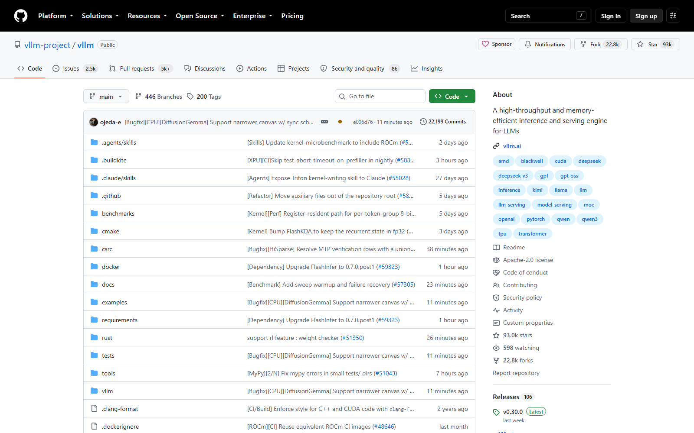
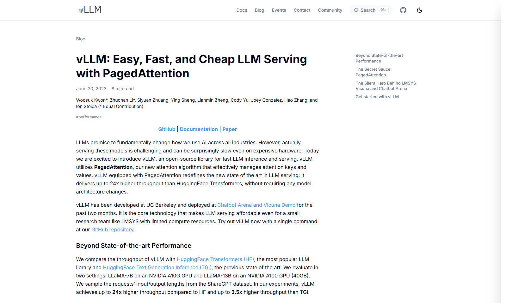
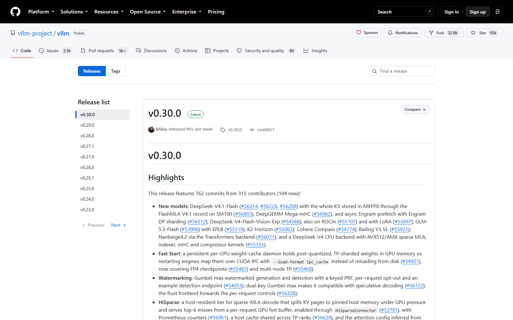

OSS PROJECT INTRO · VLLM 系列第 1 期：认识项目
今天开启新项目 vLLM——GitHub About 原文 A high-throughput and memory-efficient inference and serving engine for LLMs，面向大模型的高吞吐、省显存推理与服务引擎。它的出身在开源项目里相当罕见：不是从工具脚本长起来的，而是从一篇操作系统味道的论文起家——PagedAttention 把虚拟内存分页的思想搬进 GPU 显存，把推理服务浪费掉的 60%～80% 显存压到 4% 以内，同一块卡塞下多得多的并发请求。一句话心智模型：vLLM 是一位"显存精算师"——把每 GB 显存算到极致的生产级推理引擎。本期结束，你能答上四个问题：大模型推理为什么贵、PagedAttention 省在哪一环、vLLM 与 Ollama 的赛道差在哪、什么信号出现时该把它请进你的架构。
大模型生成文字是自回归的：一个词一个词往外吐，吐每个词都要回头"看"一遍前文。为了不重复计算，系统把前文每层的中间结果（Key 和 Value）缓存下来，这就是 KV 缓存。麻烦在于这笔账有两重属性：大——官方博客给过数字，LLaMA-13B 一条序列的 KV 缓存最多能吃到 1.7 GB；动态——它随对话长度实时生长，而请求什么时候说完，谁也预测不了。
早期推理框架的应对是按最大长度静态预留：不管这条请求最后生成 10 个词还是 2000 个词，显存先按上限圈好。结果就是官方博客的结论——60%～80% 的显存被碎片和超量预留浪费掉。显存是显卡上最贵的资源，浪费它等于直接烧钱：同一块卡同时只能服务寥寥几条请求，吞吐上不去，单请求账单下不来。大模型推理的成本问题，本质是一块显存的管理问题——这就是 vLLM 出场的地方。
vLLM 诞生于 UC Berkeley（2023 年，作者含 Woosuk Kwon、Zhuohan Li、Ion Stoica 等），Apache-2.0 许可，商用零负担。GitHub About 一句话定位：面向大模型的高吞吐、省显存推理与服务引擎——注意两个词都有："inference"管离线批量生成，"serving"管在线服务，它两头都扛。到 2026-09-30 核对时，主仓库 Star 约 93.0k、Fork 约 22.8k，在大模型基础设施开源项目里是第一梯队的流量。
一句话心智模型：vLLM 是显存精算师。它有两门看家本领：一是 PagedAttention，把操作系统分页管理内存的思想搬到 GPU 显存，KV 缓存按小块（页）按需分配，浪费压到 4% 以内；二是 Continuous Batching（连续批处理），请求随到随进批、说完即退，不必等整批一起起飞降落。两门本领合力，把"一块卡能扛多少并发"这个数字翻着倍地往上抬。

来源注记——github.com/vllm-project/vllm 仓库页（2026-09-30 截图核对）：About 自述、Star/Fork 数、Apache-2.0 许可、Releases 106 · Latest v0.30.0。
2023-06-20，团队在官方博客发文 vLLM: Easy, Fast, and Cheap LLM Serving with PagedAttention：对比当时主流方案，vLLM 把吞吐最高提到 HuggingFace Transformers 的 24 倍、TGI 的 3.5 倍——不改动任何模型结构，纯靠显存管理。同年 9 月，方法论以论文形式登上系统领域顶会 SOSP 2023（arXiv 编号 2309.06180）。
落地速度同样值得一提：LMSYS（Chatbot Arena 背后团队）把它接成自家服务后端，扛住日均约 3 万、峰值约 6 万的请求量，省下一半 GPU。从论文到生产标配，vLLM 只用了不到两年——今天各家云厂商的模型托管服务和大量推理网关，底层都有它的身影。一个"用操作系统老办法解决新硬件新问题"的样本： paging 不是新发明，把它搬到显存上的人改变了赛道。

来源注记——vllm.ai/blog/2023-06-20-vllm 官方博客（2026-09-30 截图核对）：24x/3.5x 吞吐对比、LMSYS 日均 30K/峰值 60K 请求、GPU 用量减半；论文 arXiv 2309.06180（SOSP 2023）。
这张图是全系列的地图：调度层（EngineCore 里的 Scheduler）做连续批处理，新请求不必等旧请求说完就能上批；分页层给每条请求记一张"块表"，KV 缓存按需分配到不连续的物理块上，逻辑连续、物理打散；执行层的 GPU Worker 按块表去读缓存做注意力计算。第 01 节那堵"显存墙"，就是被这三层流水线合力拆掉的。
先看清形状，第 2 期再亲手跑。以下三步对照官方 Quickstart（docs.vllm.ai，2026-09-30 核对）。
第一步，安装——官方推荐 uv 环境，一条命令装完（pip 亦可，预编译轮子默认按 CUDA 12.9 构建）：
# 官方 Quickstart（uv 环境，自动匹配本机 CUDA）
uv venv --python 3.12 --seed
uv pip install vllm --torch-backend=auto第二步，一条命令起服务——起的就是 OpenAI 兼容服务器，默认监听 8000 端口：
vllm serve Qwen/Qwen2.5-1.5B-Instruct
# 等待日志出现 Application startup complete（约 2~3 分钟）第三步，curl 一发对话——路径、报文与 OpenAI API 同构，存量应用改个地址就能切：
curl http://localhost:8000/v1/chat/completions -H "Content-Type: application/json" \
-d '{"model": "Qwen/Qwen2.5-1.5B-Instruct",
"messages": [{"role": "user", "content": "你好，介绍下你自己"}]}'来源注记——docs.vllm.ai Quickstart 与 Installation → GPU 页（2026-09-30 核对）：安装命令、vllm serve 默认端口 8000、启动就绪日志口径均出自官方文档。
很多人第一次听说 vLLM 都会问：它和 Ollama 什么关系？答案是两条赛道。Ollama 的靶心是"把模型跑在自己电脑上"，门槛压到一条命令；vLLM 的靶心是"让一台 GPU 服务器扛住最大化的并发流量"，把资源利用率压到极致。只做技术对比，不看品牌：
| 维度 | Ollama（本地玩） | vLLM（生产扛流量） |
|---|---|---|
| 定位 | 个人电脑的模型管家，消费级硬件优先 | 服务器级推理引擎，数据中心硬件优先 |
| 运行环境 | macOS / Windows / Linux 开箱即用 | Linux 原生（Windows 走 WSL），CUDA 环境 |
| 显存管理 | 按模型加载，够用就好 | 分页管理 KV 缓存，显存利用率拉满 |
| 批处理 | 少量请求为主，不做深度批处理优化 | 连续批处理，吞吐是核心指标 |
| 上手门槛 | 一条命令，零配置 | 要懂显卡、显存、启动参数 |
选型口径一句话：给自己的电脑配个随叫随到的助手，找 Ollama；给线上业务扛并发、省显卡账单，找 vLLM。两者甚至常在同一家公司共存：开发机用前者调提示词，生产集群用后者扛流量。
vLLM 发版很勤：以 2026-09-30 核对口径，GitHub 已挂出 106 个版本标签，最近三次为 v0.30.0（2026-09-22，Latest）、v0.29.0（2026-09-09）、v0.28.0（2026-08-26）——大约两到四周一个次版本，读文档、查 issue 时先对齐版本号是基本纪律。本系列五期全部锚定 v0.30.0。

动手前的环境底线，全部出自官方安装文档（2026-09-30 核对）：操作系统——Linux 原生支持，Windows 需走 WSL；Python——3.10～3.13；NVIDIA 显卡——计算能力 7.5 及以上（T4、RTX 20 系、A100、L4、H100、B200 均在列）；CUDA——预编译轮子默认按 12.9 构建，另提供 12.8 与 13.0 构建，Blackwell 卡（B200/GB200）至少 CUDA 12.8。AMD（ROCm 6.3+）、Apple Silicon、Intel XPU 亦有官方支持路径，生产主力仍是 NVIDIA。
来源注记——github.com/vllm-project/vllm/releases 与 docs.vllm.ai Installation → GPU 页（2026-09-30 核对）：版本号与发布日期、CUDA/Python/显卡要求、Windows 走 WSL 的口径均出自官方。
vLLM 是"重"工具：环境要 Linux 加 CUDA，参数要自己调。值不值得引入，给一个三问框架：
第 2 期讲 5 分钟跑起来、第 3 期讲核心概念与整体架构、第 4 期讲压测与容量实战、第 5 期源码导读收官——学完这五期，上面三问你有能力自己回答。
每题点击选项立即反馈 · 共 3 题
1. vLLM 在 GitHub About 里对自己的一句话定位是？
2. 早期推理框架的"显存墙"，根源是？
3. PagedAttention 的核心灵感来自？
这是一道容量规划的权衡题，省出来的显存有三种花法，对应三种业务诉求。第一种，换并发。同款卡塞进更多请求，单卡吞吐直接抬升——这是大多数在线服务的默认选择，vLLM 的连续批处理会自动把新增显存变成更大的批次，无需人工干预。第二种，换上下文长度。用 --max-model-len 把可服务的最大序列拉长，长文档问答、长代码补全这类场景直接受益；代价是每条请求的 KV 缓存上限变大，能同时容纳的并发数下降——本质上是在"宽"和"深"之间做交换。第三种，换模型规格。显存富余后可以升级到参数更大的模型，或给多实例腾出余量；但要记住权重是固定开销，模型一大，弹性空间反而变小。工程上的正确姿势是留一份弹性：不要把省出的显存全部押注在某一维上——给峰值流量留 buffer、给版本升级留余量，比把利用率压到 100% 更重要。官方默认把显存水位定在 0.92 而不是 1.0，就是这个逻辑（默认值口径见第 3 期）。一句话：精算师的价值不是把账算满，而是把每一份余量都花在刀刃上。
按"合规 → 成本 → 运维 → 弹性"四步走。第一步，合规定边界。对话内容是否含敏感数据、能否出本机？不能出 → 云端 API 出局，候选收敛到本地两条；能出 → 云端 API 保留，且往往是省心之选。第二步，算成本账。日均 5 万次、按平均 500 词估算，云 API 按量计费全年是一笔可观的流水；自建路线一张消费级或入门级数据中心卡（如一块 24 GB 显存的卡跑 7B 量化模型）即可覆盖，硬件一次性投入后边际成本极低——量越大，自建越划算。第三步，盘运维能力。有没有人管 Linux + CUDA 环境、盯显存水位、做模型升级？有 → vLLM 路线成立，峰值并发 20 配合连续批处理单卡即可稳住；没有 → Ollama 这类低门槛方案先顶上，代价是吞吐上限和并发能力明显弱一档，业务增长后大概率要二次迁移。第四步，留弹性。客服流量有明显峰谷（工作日白天为峰），自建方案要评估夜间的资源闲置是否可接受，或把离线批量任务（质检、摘要）安排进低谷时段摊平成本。综合结论：这个量级恰好卡在分界线上——合规可出本机且团队无 GPU 运维人力，选云端 API 最务实；数据不能出门或成本敏感且有人力，自建 vLLM 是一年内必然到达的终点，Ollama 可以作为开发期的本地玩具先上场。架构决策的依据从来不是工具热度，而是合规、成本、运维三条约束的交集。
带走这五句话：
下期预告：第 2 期《5 分钟跑起来》——装上 vLLM，一条命令起 OpenAI 兼容服务，curl 收到第一句回答，顺手讲清三个最常用的启动参数：模型怎么指、上下文长度怎么控、显存水位怎么调。
Primary source：vLLM 官方文档（docs.vllm.ai）——本期版本口径、安装要求与命令均出自官方文档与仓库（v0.30.0，2026-09-30 核对）；起家故事见 官方博客官宣文，论文见 arXiv 2309.06180（SOSP 2023）。